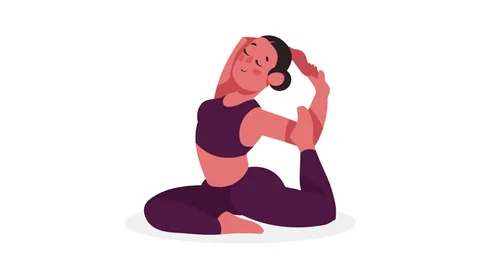

Your daily dose of mindfullnes
If this is your first time, the documentation for the standard library is written to be casually perused. Clicking on interesting things should generally lead you to interesting places. Still, there are important bits you don’t want to miss, so read on for a tour of the standard library and its documentation!
